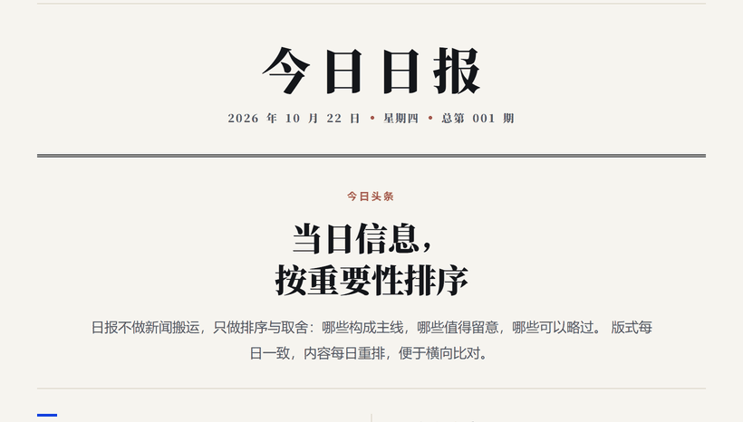
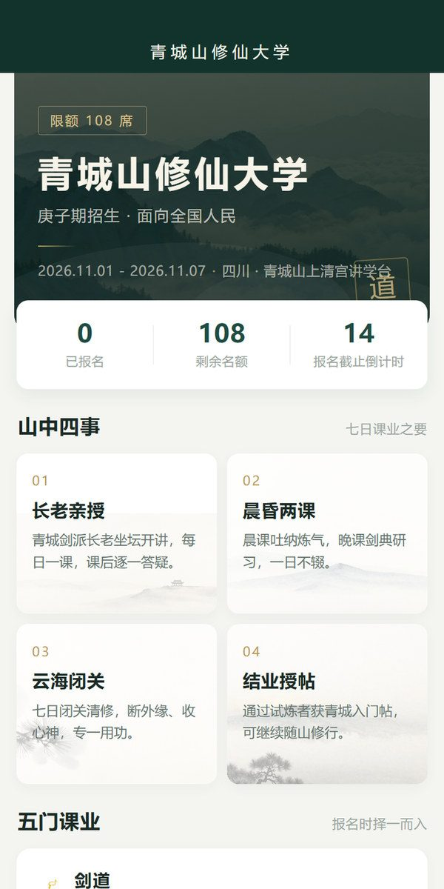

02 07:00定时触发 n8n取数排版 publish.py校验提交 Pages每日上线  ↗ 2026自动化 n8n 日报流水线 每天 07:00 自己跑完：取数、排版、校验、提交上线，人只在它出错时看一眼。 n8n自动化GitHub Pages
03 wx.login静默登录 activities取活动 enrollments写入报名 records查本人  ↗ 2026产品 青城山招生小程序 看完日程与名额就地报名：填表、传形象照、查审核状态，四页走完。 微信小程序云数据库ComfyUI 出图